Symmetry and Similarity
Symmetry is beautiful. Symmetry appears everywhere in nature. And symmetry can be explained using mathematics. There are three basic kinds of symmetry:
| 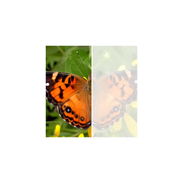 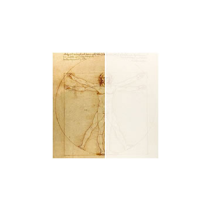  The images are reflected along an axis of symmetry.   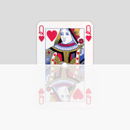 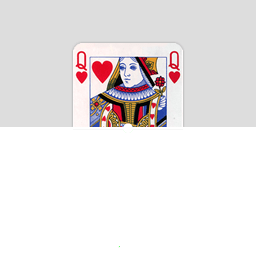 The images are rotated around a point of symmetry. The number of rotations required is called the order of the symmetry. The images is repeated in regular intervals as you move (translate) it. |
Think about where these symmetries appear in nature. Some objects can have several symmetries at once, such as both reflectional and rotational symmetry, or several axes of reflectional symmetry.
Two shapes which are the same after reflection, rotation or translation (moving) are called congruent. Two shapes which also need to be scaled proportionally are called similar.
 | |
| these two pentagons are congruent | these two stars are similar |
Symmetries of a Square
Let us consider the square as a simple example. To recognise different configurations, we need to highlight the four corners in different colours. Here is a list of all possible rotations and reflections:
 |  | ||
| do nothing | rotate by 90° | rotate by 180° | rotate by 270° |
 |  | 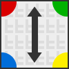 |  |
| reflect horizontally | reflect diagonally (1) | reflect vertically | reflect diagonally (2) |
This collection of symmetries of a square has very special properties. In many ways, the symmetries behave like numbers: we can add symmetries by applying one first and then the other. We can subtract a symmetry by applying its opposite. And there is a ‘0’ value, called the identity: doing nothing.
| + = | – = |
| + = | + = |
Note that whenever we add or subtract two rotations or two reflections we get a rotation. But if we add or subtract one reflection and one rotation we get a reflection. This behaviour is very similar to even and odd numbers: adding two even or two odd numbers gives and even number, but adding one odd and one even number gives an odd number.
When adding more than two symmetries, we can use brackets to specify the order. For example,  +
+  +
+  could mean (
could mean (  +
+  ) +
) +  , or it could mean
, or it could mean  + (
+ (  +
+  ). It is not clear why both ways should give the same result – but if we try it we can see that they do. This not only true for this example but for all possible additions. If a, b and c are any symmetries, then a + (b + c) = (a + b) + c. The property that the order of addition does not matter is called associativity.
). It is not clear why both ways should give the same result – but if we try it we can see that they do. This not only true for this example but for all possible additions. If a, b and c are any symmetries, then a + (b + c) = (a + b) + c. The property that the order of addition does not matter is called associativity.
It does however matter which way round we add two symmetries – they are not commutative. For example,
+ = but + = .
There is another interesting property of this set of symmetries: all symmetries can be created by adding just two of them, such as  and
and  . We have
. We have
| = | = | |
We say that  and
and  are generators for this collection of symmetries – they can be used to generate all the others.
are generators for this collection of symmetries – they can be used to generate all the others.
Groups

The icosahedron has 120 symmetries.
We can repeat the previous section using triangles or pentagons, or three-dimensional objects like a cube. In each case we would get a similar collection of symmetries, and we would discover that many of their properties are the same. But in mathematics it is often easier to think about one general concept, rather than many different individual cases. We are looking for an overarching idea that describes all these different collections of symmetries at once. This idea is called a Group.
A group, in mathematics, is a collection of “objects” (like symmetries of a cube) together with an operation “∗” (like the addition + of symmetries), which satisfies the following properties:
- If A and B are elements of the group then A ∗ B is also an element of the group. Remember that adding two symmetries of a square always produced another symmetry of a square.
- The operation ∗ is associative, meaning that A ∗ (B ∗ C) = (A ∗ B) ∗ C for any elements A, B and C in the group.
- There is an identity (a 0-element) which does nothing. For squares, this was .
- Every element has an opposite or inverse, which, when combined, gives the identity. For example + = , so is the inverse of . Note that some elements can be their own inverse, like in + = .
Whenever a collection of objects satisfies these four conditions, called the group axioms, we call it a group.
We have shown that the symmetries of a square form a group, and similarly do the symmetries of any other regular shape. Some groups have more elements, others have fewer, but they always satisfy the four axioms.
The “objects” in the group don’t have to be symmetries, they could be integers … –2, –1, 0, 1, 2, … Whenever we add two integers, we get another integer. It doesn’t matter in which order we add them, so they are associative. The identity is 0, and the inverse of any element is just its negative value. The inverse of 2, for example, would be –2, and the inverse of –10 is 10. Therefore the integers are a group (under addition).
The symmetry groups of polygons all have a finite number of elements, but the group of integers is infinite. There are countless other finite and infinite groups, but their behaviour is very similar.
A brief History of Group Theory
Évariste Galois (1811 – 1832), one
of the fathers of Group Theory
Groups appear not only when thinking about symmetries or integers, but in many different areas of mathematics. They were first used by the French mathematician Évariste Galois (1811 – 1832) in order to determine whether polynomial equations can be solved. At the age of twenty Galois was shot in a duel, the reason most likely being a love affair. He stayed up all night before his death, writing down some of his ground-breaking mathematical ideas.
In the following years, mathematicians working in many different fields started to use groups: including the geometric groups above and groups of numbers. They had a profound impact on the way we can describe structures and patterns in mathematics, and gave rise to what is called abstract algebra.
Mathematicians started to notice that groups arising in different contexts can behave in very similar ways. Although the elements in the groups may be symmetries in one case and numbers in the other, they behave and interact exactly the same (these groups are called isomorphic). In abstract algebra we therefore think about the structure of groups as a whole, rather than the individual elements.
Since symmetry underlies many effects in nature, group theory is an essential tool in many areas of science, from the symmetries of molecular structures in chemistry to force fields in particle physics.
 |  |  |
| Symmetry groups can explain the behaviour of crystal structures. | At CERN, physicists study the symmetries of fundamental particles. | The very fabric of the universe is symmetric in space and time. |
Every symmetry in nature leads to a particular physical quantity being conserved. “Time” is symmetric and this causes energy to be conserved. “Space” is symmetric and this causes momentum to be conserved. The symmetries of fundamental particles (actually of their associated “fields”) lead to many other quantities and forces being conserved. Understanding the symmetry groups associated with these particles helps physicists understand how our universe works.
Wallpaper Groups
A tessellation is a pattern that can cover a flat surface without any gaps or overlaps. Most tessellations are very symmetric: they can have translational, rotational or reflectional symmetries. They can also have a symmetry called glide reflection, a combination of reflection and translation.
These symmetries represent the transformations we can do to a tessellation, so that it looks exactly the same as it did before. They are called the Isometries of the Plane.
| 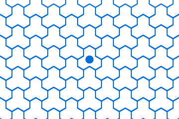 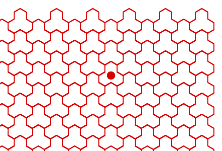  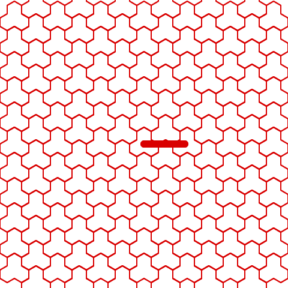 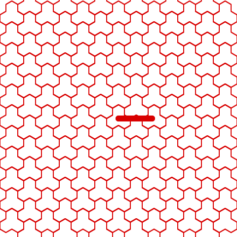 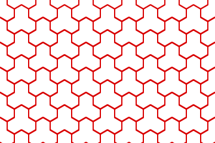 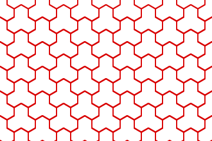 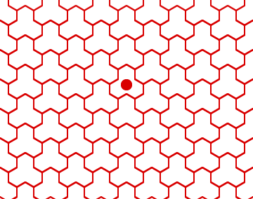 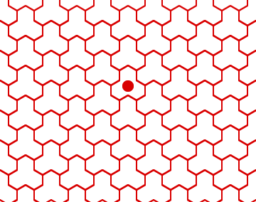 |
All tessellations have a symmetry group, similar to the square we investigated above. These symmetry groups don’t tell you about the pattern that underlies a tessellations, but how the pattern is repeated. Therefore many different tessellations can have the same symmetry group:
| 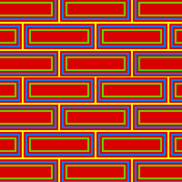 | 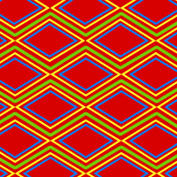 | 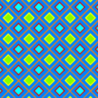 |  |
| These tessellations look very different but they have the same symmetries. | These two tessellations look almost the same, but they have different symmetries. | ||
It turns out that, among the millions of different patterns and tilings, there are only 17 kinds of symmetry groups a tessellation can have – these are called the Wallpaper Groups. There is no intuitive reason why there are exactly seventeen wallpaper groups, or why any tessellation must have one of those 17 symmetries. Proving it requires more advanced group theory.
Every wallpaper group is defined by a combination of translations, rotations, reflections and glide reflections. Try to find the points of rotation and axes of reflection in the 17 examples below.

1: P1
Only Translations
2: P2
Rotations of order 2
3: P3
Rotations of order 3
4: P4
Rotations of orders 4 and 2

5: P6
Rotations of orders 6, 3 and 2

6: PM
Reflections along parallel axes
7: PMM
Reflections along perpendicular axes
rotations of order 2

8: P4M
Reflections, rotations and glide reflections
9: P6M
Reflections, rotations and glide reflections

10: P3M1
Reflections, rotations and glide reflections

11: P31M
Reflections, rotations and glide reflections
12: P4G
Reflections, rotations and glide reflections
13: CMM
Reflections, rotations and glide reflections
14: PMG
Reflections, rotations and glide reflections

15: PG
Glide Reflections along parallel axes
16: CM
Reflections and glide reflections along parallel axes

17: PGG
Reflections, rotations and glide reflections
Just like we listed all possible symmetry groups of two-dimensional space above, we could list all symmetry groups of three-dimensional space. These are called crystallographic groups and are defined by symmetries of three-dimensional space: translations, glide planes and screw axes (think about the motion when unscrewing a bottle). There are not only 17 of these groups but a total of 219. We shall not list them here…
Finite Simple Groups
We have seen that it is possible to add or multiply elements in a group to make a new element in that group. In fact, it is also possible to multiply and divide entire groups to create new groups. And just like prime numbers can’t be divided, there are certain groups which cannot be divided any further. These are called Simple Groups.
One of the biggest achievements of mathematics research in the second half of the 20th century was to find and classify all simple groups which are finite. Unlike randomly distributed prime numbers, finite simple groups have well-defined structures.
Most finite simple groups fall into certain classes, but there are a few that don’t follow a systematic pattern: the Sporadic Groups. The largest of these sporadic groups wasn’t discovered until 1973: the Monster. It has 808 017 424 794 512 875 886 459 904 961 710 757 005 754 368 000 000 000 elements.
It is very surprising, and maybe even discomforting, that very simple ideas like the four group axioms can create objects so huge and bizarre as the Monster group.